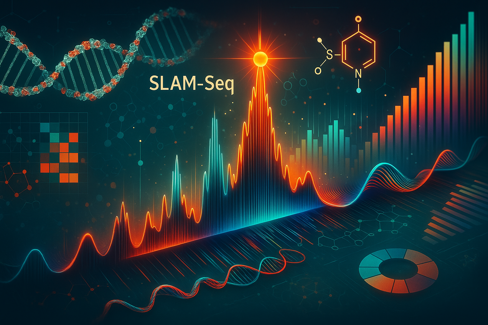

SLAM-seq_Analysis
Kevin Boyd
2025-07-29


SLAM-Seq_Analysis

- OpenAI. (2025). Scientific data visualization: SLAM-seq pipeline
schematic [AI-generated image]. DALL-E. Retrieved from ChatGPT
interface.
1) Project Description
SLAM-Seq_Analysis is a modular, high-throughput Snakemake pipeline designed to analyze SLAM-Seq data. It quantifies RNA synthesis and degradation by detecting T>C transitions. This pipeline processes raw paired-end FASTQ files through quality control, UMI extraction, adapter trimming, alignment, mutation counting, and context-specific mutation analysis using SLAM-Dunk and Alleyoop. The final output includes BAM files, CSVs, summary files, and MultiQC reports.
It supports both default 1-TC and custom
2-TC read count thresholds for downstream comparative analysis
and includes fully automated MultiQC reports for raw,
trimmed, and SLAM-Dunk outputs. Additionally, the pipeline optionally
supports a spike-in genome (e.g., S. pombe), allowing
for parallel alignment and mutation quantification for normalization and
QC purposes. Spike-in analysis is controlled by the flag
use_spikein in the config.yml and produces a
parallel set of filtered BAMs, mutation calls, and summary reports in a
separate output directory results/slamdunk_spikein.
Key Features
- UMI Support
- Extracts UMIs using
fastp, allowing for duplicate-aware alignment and quantification
- Extracts UMIs using
- Multiple Adapter Trimming Methods Set in
config.yml(optional)- Choose between Trim Galore or
BBduk
use_trim_galore: toggle between BBduk and Trim Galore
- Choose between Trim Galore or
BBduk
- Comprehensive QC Reports
- FastQC on raw and trimmed reads
- MultiQC reports summarize results in unified HTML
- FastQC on raw and trimmed reads
- Spike-In Genome Support in
config.yml(optional)use_spikein: toggle between true/false to enable/disable spike-in genome alignment
spikein_genome,spikein_bed: reference FASTA and BED for spike-in genome
- Generates its own BAMs, tcount files, and QC reports
- SLAM-Dunk Integration
slam-dunk all: Align, filter, SNP call, and count
slam-dunk count: Rerun mutation quantification with 2-TC threshold
- Alleyoop Analysis
- Generates mutation rates, context, UTR rates, SNP evaluation
- Summarizes and merges mutation counts across samples
- Outputs T>C mutation information per read and UTR position
- Generates mutation rates, context, UTR rates, SNP evaluation
- Scalable and Reproducible
- Parallelizable via Snakemake
- Designed for Slurm HPC environments
- Parallelizable via Snakemake
2) Intended Use Case
This pipeline is built for researchers analyzing RNA turnover via SLAM-seq, especially when interested in:
- Mutation counts (T>C transitions) per gene or region
- Comparing samples using 1-TC vs. 2-TC thresholds
- Producing summary metrics and mutation contexts
- Running in a reproducible and modular HPC environment
- Supports optional spike-in controls (e.g., S. pombe) to facilitate normalization across samples or conditions.
Starting from raw paired-end FASTQs, it provides all necessary intermediate and final outputs, from filtered BAMs to mutation summaries and log diagnostics.
3) Dependencies and Configuration
All user-defined settings and tool versions are declared in
config/config.yml.
Key fields include: + scer_genome:
reference genome FASTA
+ bed_file: annotation BED file
+ bbmap_ref: adapter reference for BBduk (optional)
+ umi_loc, umi_len: UMI extraction
parameters
+ trim_5p, max_read_length,
min_base_qual: parameters for SLAM-Dunk
+ use_trim_galore: Boolean to toggle trimming tool
+ stringency, length: used by Trim Galore
Tool Versions
+ fastqc, multiqc, fastp,
bbmap, trim_galore, slamdunk,
samtools, varscan, nextgenmap
4) Tools & Modules
This pipeline uses the following tools via HPC environment modules:
- FastQC for raw and trimmed read QC
- MultiQC for unified reporting of QC metrics
- Fastp for UMI extraction
- BBduk or Trim Galore for adapter
trimming
- SLAM-Dunk for alignment, mutation calling,
filtering
- Alleyoop for contextual mutation analysis and
merging
- Samtools, VarScan,
NextGenMap used internally by SLAM-Dunk
- Snakemake for workflow management
5) Example Data
A minimal test dataset can be placed in a resources/
folder (not included currently). Update samples.csv to
point to these FASTQs for a quick test run. Once confirmed, replace with
your personal SLAM-seq data.
6) Explanation of samples.csv
config/samples.csv defines which FASTQ files to process,
what the naming convention will be, and which samples to create average
signal tracks. An example samples.csv is provided
below:
| sample | fastq1 | fastq2 | merge_group |
|---|---|---|---|
| RDY73_DMSO_A | /path/RDHTS192_S63_R1_001.fastq.gz | /path/RDHTS192_S63_R2_001.fastq.gz | DMSO |
| RDY73_IAA_A | /path/RDHTS193_S64_R1_001.fastq.gz | /path/RDHTS193_S64_R2_001.fastq.gz | IAA |
| RDY73_DMSO_B | /path/RDHTS195_S66_R1_001.fastq.gz | /path/RDHTS195_S66_R2_001.fastq.gz | DMSO |
| RDY73_IAA_B | /path/RDHTS196_S67_R1_001.fastq.gz | /path/RDHTS196_S67_R2_001.fastq.gz | IAA |
| RDY73_DMSO_C | /path/RDHTS198_S69_R1_001.fastq.gz | /path/RDHTS198_S69_R2_001.fastq.gz | DMSO |
| RDY73_IAA_C | /path/RDHTS199_S70_R1_001.fastq.gz | /path/RDHTS199_S70_R2_001.fastq.gz | IAA |
- sample: unique sample ID that will serve as file
naming convention downstream
- fastq1 and fastq2: file paths to
paired-end fastq files
- merge_group: optional group for downstream averaging or plotting
7) Output Structure
The pipeline generates output across several folders:
- Quality Control
results/qc/raw/fastqc/— FastQC HTML/ZIP for raw FASTQs
results/qc/raw/multiqc/— MultiQC report for raw reads
results/qc/trimmed/fastqc/— FastQC on trimmed FASTQs
results/qc/trimmed/multiqc/— MultiQC report for trimmed reads
- Preprocessing
results/fastp/— FASTQs with UMIs extracted
results/trimmed/— Adapter-trimmed FASTQs
- SLAM-Dunk Core Output
results/slamdunk_scer/filter/— Filtered BAM files
results/slamdunk_scer/count/— 1-TC tcount TSVs, logs, bedgraphs
results/slamdunk_scer/count_twotcreadcount/— 2-TC threshold tcount files
- Alleyoop Output
alleyoop/rates/— overall mutation rates
alleyoop/tccontext/— T>C context profiles
alleyoop/utrrates/— UTR region mutation rates
alleyoop/snpeval/— SNP evaluation outputs
alleyoop/tcperreadpos/— mutation per read
alleyoop/tcperutrpos/— mutation per UTR position
alleyoop/dump/—.sdunkread info dump
alleyoop/summary_*— summary stats for 1-TC and 2-TC thresholds
alleyoop/merge_*— merged summary tables across all samples
- Final QC
results/qc/slamdunk_scer/multiqc/— Summary MultiQC report of SLAM-Dunk logs
- Spike-In Genome Output (if
use_spikein: true)results/slamdunk_spikein/filter/— filtered BAMs aligned to spike-in genome
results/slamdunk_spikein/count/— 1-TC tcount TSVs, logs, bedgraphs
results/slamdunk_spikein/count_twotcreadcount/— 2-TC threshold tcount files
results/slamdunk_spikein/alleyoop/— all standard mutation metrics (rates, context, UTRs, SNP eval, dump, summaries, merges)
results/qc/slamdunk_spikein/multiqc/— MultiQC summary report for spike-in genome
This output mirrors the primary genome
slamdunk_scer/ and can be used for spike-in normalization
or quality control tracking.
8) Instructions to Run on HPC
8A. Download version controlled repository
wget https://github.com/DonczewLab/SLAM-Seq_Analysis/releases/download/v1.0.1/SLAM-Seq_Analysis-1.0.1.tar.gz
tar -xzf SLAM-Seq_Analysis-1.0.1.tar.gz
rm SLAM-Seq_Analysis-1.0.1.tar.gz
cd SLAM-Seq_Analysis-1.0.18B. Load modules
module purge
module load slurm python/3.10 pandas/2.2.3 numpy/1.22.3 matplotlib/3.7.18C. Modify samples and config file
vim config/samples.csv
vim config/config.yml8D. Dry Run
snakemake -npr8E. Run on HPC with config.yml options
sbatch --wrap="snakemake -j 20 --use-envmodules --rerun-incomplete --latency-wait 300 --cluster-config config/cluster_config.yml --cluster 'sbatch -A {cluster.account} -p {cluster.partition} --cpus-per-task {cluster.cpus-per-task} -t {cluster.time} --mem {cluster.mem} --output {cluster.output} --job-name {cluster.name}'"9) Citation
If you use this workflow in your research, please cite:
Boyd, K.A., Ridenour, J., & Donczew, R. (2025). SLAM-Seq_Analysis: A reproducible Snakemake workflow for RNA metabolism analysis using SLAM-Seq data. Zenodo. https://doi.org/10.5281/zenodo.16106788